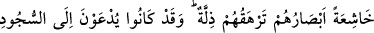
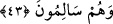

dünyada iken O’ndan başkasına tapmazdık, derler. İşte bu söz üzerine onlara sâk
açılır, Allah onların, kendisini rableri olarak bilecekleri şekilde azametiyle tecellî
eder. Bu tecellîyi gören müminler derhal yüzleri üzerine secdeye kapanırlar. Her
münâfık da tepe üstü yere yıkılır. Onların sırtları sığırın boynuzu gibi kaskatı
olmuştur. Sonra cehennemin önüne sırat köprüsü kurulur.” [52]
Allah’ın başka bir şekle dönüşmesi meselesi âlimlerin üzerinde görüş birliği ettikleri
hususlardandır. Bu Allah’ın ilâhî sıfatlarının eserlerindendir. Bu tıpkı, Cenab-ı Hakk’ın
rüyada insan sûretinde görülmesine benzer. Yoksa Allah zâtı itibariyle herhangi bir
sûrete bürünmekten ve buna benzer başka şekiller almaktan münezzehdir.
Bu âyet-i kerîme “teklif-i mâ lâ yutak” yâni insanın gücünün yetmeyeceği şeylerle
mükellef tutulmasının câiz olduğuna işâret etmektedir. Kaderiye mezhebi bu kanâatte
değildir. Dolayısıyla bu âyet, kaderiye mezhebine karşı bir delil teşkil etmektedir.
Nitekim Es’iletü’l-mukhame’de bu şekilde açıklanmaktadır. Fakat şu noktanın da
bilinmesi gerekir: Teklif-i mâ lâ yutak’dan maksad, normal olarak muhal olan şeylerdir.
Gözü görmeyen bir kişiyi Mushaf’a bakmakla yükümlü tutmak gibi. Bu şekilde bir
yükümlü tutmanın câiz olduğu noktasında âlimler arasında herhangi bir görüş ayrılığı
yoktur. Teklif-i mâ lâ yutak’tan kasdedilen bir diğer anlam ise muhâl-i ârızi’dir. Meselâ
Ebû Cehil’e îman teklif etmek, böylesi bir teklif-i mâ lâ yutak’tır. Çünkü Ebû Cehil’in
îmâna gelmesi, ortaya çıkan bir ârız sebebiyle imkânsızdır. Sözkonusu bu ârız ise,
Allah’ın onun îman etmeyeceğine dâir vermiş olduğu haberdir. Eşari’ler mâ lâ yutak ile
teklifi câiz görürlerken Mûtezile mezhebi buna cevaz vermez.. Muhâl-i âdi ile muhâl-i
arizî’nin dışında birde muhâl-i akli vardır. Bu zâtı itibariyle imkânsız olan şey demektir.
Sözgelimi kadim’in yok edilmesi, muhal-i akli çeşidindendir. Böyle bir teklifle yükümlü
kılınacağını hiçbir kimse câiz görmemiştir.
43. Gözleri horluktan aşağı düşmüş bir hâlde kendilerini zillet bürür. Halbuki
onlar, sapasağlam iken de secdeye dâvet ediliyorlardı (fakat yine secde
etmiyorlardı).
“Gözleri horluktan aşağı düşmüş bir hâlde, kendilerini zillet bürür.” Burada
“hâşi’aten” kelimesi “yud’avne” fiilinin mef’ûlünden hâldir. “Ebsâruhum” kelimesi
“hâşiaten” kelimesinin fâili olmak üzere merfûdur. Huşû’ yâni ürperip korkmanın
gözlere nisbet edilmesi, korkunun etkisinin gözlerde ortaya çıktığından dolayıdır. Yoksa
insanın diğer organları da korku duyar, zillet içinde olur. Aslında huşû’ duyan, insanın
kalbidir. Çünkü kalp korkunun başlamış olduğu; ilk hissedildiği noktadır.
Ebu’l-Leys der ki: Müslümanlar başlarını secdeden kaldırdıkları zaman yüzleri kar